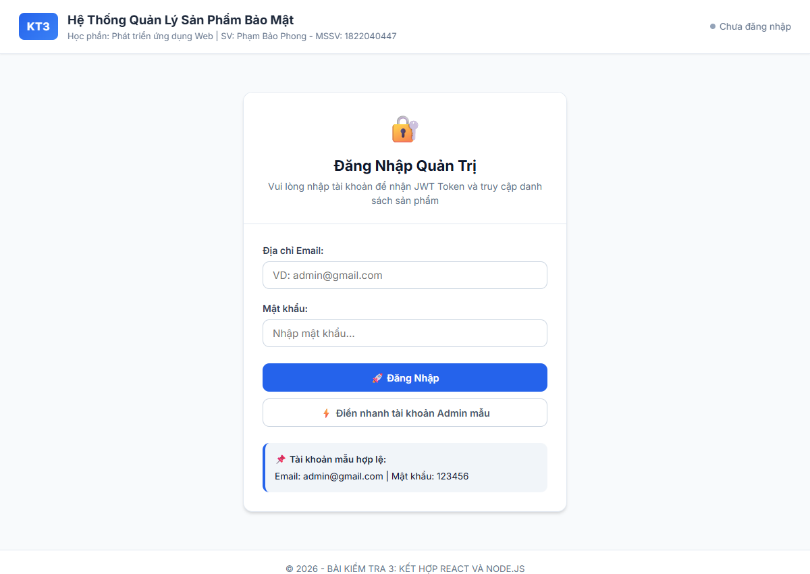
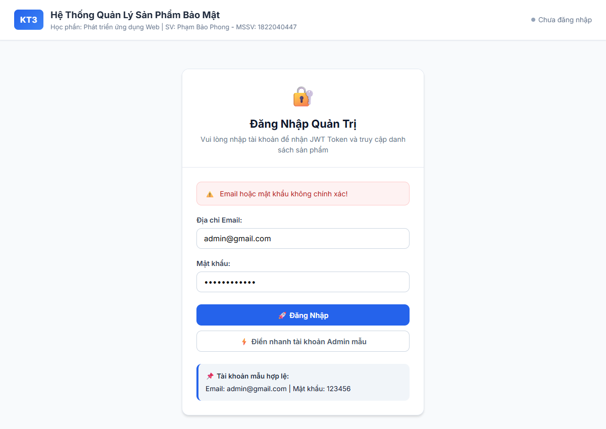
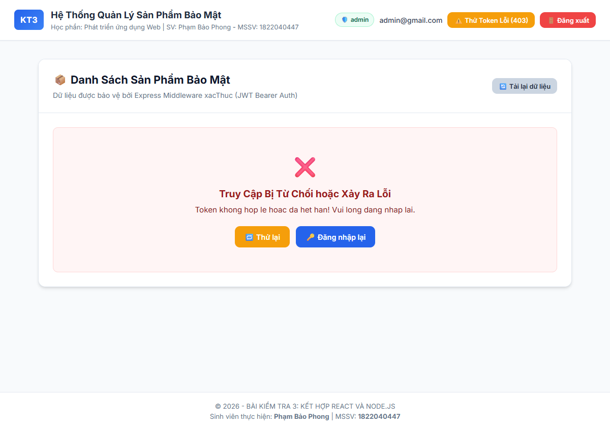
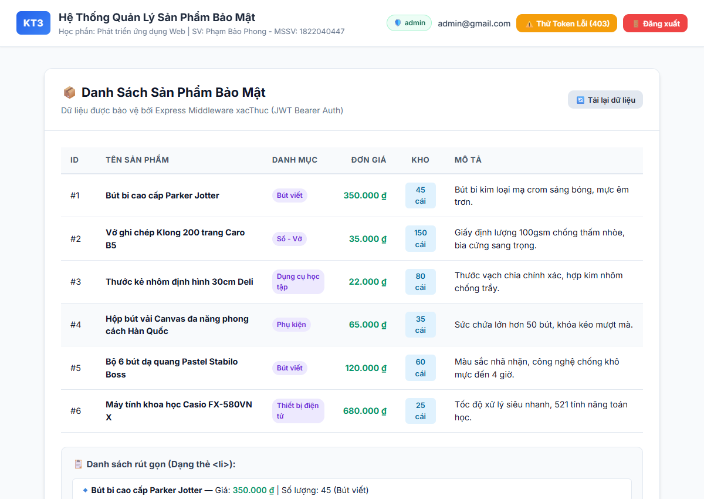

BÁO CÁO THỰC HÀNH & KIỂM TRA SỐ 3 (KT3)
CHƯƠNG 4: KẾT HỢP REACT VÀ NODE.JS
Học phần: Phát triển ứng dụng Web
Chủ đề: Giao tiếp Client–Server qua CORS, Xử lý Đăng nhập, JSON Web Token (JWT) và Middleware Phân quyền bảo mật
| Sinh viên thực hiện: |
Phạm Bảo Phong |
| Mã số sinh viên: |
1822040447 |
| Lớp học phần: |
Phát triển ứng dụng Web |
| Hệ đào tạo: |
Đại học chính quy |
| Thời gian hoàn thành: |
Tháng 10 / 2026 |
PHẦN 1: TRẮC NGHIỆM LÝ THUYẾT (KHOANH TRÒN ĐÁP ÁN ĐÚNG)
Dưới đây là bảng tổng hợp các phương án chính xác và phần phân tích cơ chế chi tiết dựa theo nội dung Slide bài giảng Chương 4 - Phát triển ứng dụng Web:
| Câu |
Chủ đề câu hỏi |
Đáp án |
Nội dung đáp án chuẩn |
| Câu 1 |
Cấu hình CORS trong MERN |
C |
Vì Client và Server thường chạy ở hai cổng (port) hoặc tên miền khác nhau. |
| Câu 2 |
Tác dụng .then(res => res.json()) |
B |
Chuyển đổi phản hồi (response) từ HTTP sang đối tượng JavaScript để sử dụng. |
| Câu 3 |
Bước tiếp theo sau khi Server query DB |
C |
Server trả kết quả JSON kèm mã trạng thái (VD: 200) về cho Client. |
| Câu 4 |
Hàm tạo Token trong jsonwebtoken |
C |
jwt.sign() |
| Câu 5 |
Cách chuẩn gửi JWT lên Server |
D |
Gửi qua Header với định dạng: Authorization: Bearer <token>. |
| Câu 6 |
Vai trò hàm next() trong Middleware |
B |
Chuyển tiếp request đến route xử lý tiếp theo nếu token hợp lệ. |
| Câu 7 |
Ý nghĩa state loading và error trong React |
A |
Vì việc gọi API là bất đồng bộ, cần hiển thị trạng thái chờ và thông báo nếu thất bại để cải thiện trải nghiệm người dùng (UX). |
Câu 1: Trong kiến trúc MERN, vì sao React (Client) và Node.js (Server) thường cần được cấu hình CORS?
- A. Vì chúng sử dụng chung một cơ sở dữ liệu MongoDB.
- B. Vì React không thể gọi trực tiếp API nếu không có CORS.
- C. Vì Client và Server thường chạy ở hai cổng (port) hoặc tên miền khác nhau. ĐÚNG
- D. Vì CORS giúp mã hóa mật khẩu người dùng trước khi gửi lên Server.
Giải thích chi tiết: Trình duyệt web áp dụng cơ chế bảo mật Same-Origin Policy (SOP). Khi Client React chạy tại http://localhost:5173 gọi API tới Node.js Server tại http://localhost:3000, hai ứng dụng có Port khác nhau nên bị coi là khác Nguồn gốc (Cross-Origin). Nếu Server không cấu hình CORS để thêm header Access-Control-Allow-Origin, trình duyệt sẽ chặn response gửi về client.
Câu 2: Khi sử dụng fetch để gọi API trong React, dòng code .then(res => res.json()) có tác dụng gì?
- A. Chuyển đổi dữ liệu JSON gửi từ Client thành chuỗi.
- B. Chuyển đổi phản hồi (response) từ HTTP sang đối tượng JavaScript để sử dụng. ĐÚNG
- C. Tự động lưu dữ liệu vào state của React.
- D. Gửi kèm JWT token vào header của request.
Giải thích chi tiết: Hàm fetch() trả về một Response object chứa ReadableStream dữ liệu thô dạng byte. Phương thức res.json() đọc toàn bộ stream đó và phân tích cú pháp (parse) chuỗi JSON thành đối tượng JavaScript (hoàn trả một Promise) để các hàm tiếp theo có thể thao tác với object/array.
Câu 3: Theo vòng đời của một tính năng động, sau khi Express Server truy vấn xong dữ liệu từ MongoDB, bước tiếp theo hệ thống sẽ làm gì?
- A. React tự động cập nhật state.
- B. Express chạy middleware xác thực.
- C. Server trả kết quả JSON kèm mã trạng thái (VD: 200) về cho Client. ĐÚNG
- D. Trình duyệt tự động render lại giao diện.
Giải thích chi tiết: Chu trình Request - Response trong kiến trúc Client-Server: (1) Client gửi request -> (2) Express nhận request và chạy middleware xác thực -> (3) Server query MongoDB -> (4) Server phản hồi kết quả về Client: res.status(200).json(data) -> (5) Sau khi nhận được dữ liệu, React Client mới tiến hành cập nhật state và re-render giao diện.
Câu 4: Hàm nào của thư viện jsonwebtoken được sử dụng để tạo ra một JWT token sau khi người dùng đăng nhập thành công?
- A. jwt.verify()
- B. jwt.create()
- C. jwt.sign() ĐÚNG
- D. jwt.generate()
Giải thích chi tiết: Thư viện jsonwebtoken cung cấp hàm jwt.sign(payload, secretKey, options) để ký số sinh token. Ngược lại, jwt.verify() dùng ở Middleware để kiểm tra tính hợp lệ của token. Thư viện không có hàm jwt.create() hay jwt.generate().
Câu 5: Cách chuẩn nhất để gửi JWT token từ React lên Node.js khi gọi một API cần bảo mật là gì?
- A. Gửi qua URL query (VD: ?token=...).
- B. Gửi qua Body của request.
- C. Gửi qua Cookie mặc định của trình duyệt.
- D. Gửi qua Header với định dạng: Authorization: Bearer <token>. ĐÚNG
Giải thích chi tiết: Theo chuẩn quốc tế RFC 6750 (OAuth 2.0 Bearer Token), token được gửi trong trường Header Authorization: Bearer <token>. Cách này hoạt động đồng nhất cho mọi HTTP Method (GET, POST, PUT, DELETE), không bị lộ qua URL log như query parameter, và tách biệt dữ liệu nghiệp vụ ở body.
Câu 6: Trong Middleware phân quyền của Node.js, hàm next() có vai trò gì?
- A. Dừng request lại và trả về lỗi 403.
- B. Chuyển tiếp request đến route xử lý tiếp theo nếu token hợp lệ. ĐÚNG
- C. Tự động giải mã token và lưu vào Database.
- D. Tạo một token mới nếu token cũ đã hết hạn.
Giải thích chi tiết: Trong mô hình Middleware của Express, các hàm chạy theo chuỗi tuần tự (pipeline). Nếu điều kiện xác thực thành công, việc gọi next() sẽ chuyển quyền điều khiển sang middleware hoặc controller kế tiếp. Nếu không gọi next() và không gửi response, request sẽ bị treo vô tận.
Câu 7: Vì sao cần phải có các state như loading và loi (error) khi gọi API trong React?
- A. Vì việc gọi API là bất đồng bộ, cần hiển thị trạng thái chờ và thông báo nếu thất bại để cải thiện trải nghiệm người dùng (UX). ĐÚNG
- B. Vì Axios và Fetch bắt buộc phải nhận vào 3 biến state này.
- C. Để Server biết khi nào Client đã tải xong trang.
- D. Để bảo vệ dữ liệu không bị tấn công.
Giải thích chi tiết: Gọi API qua mạng là tác vụ bất đồng bộ (Asynchronous) luôn có độ trễ do đường truyền hoặc xử lý phía máy chủ, đồng thời có nguy cơ phát sinh lỗi (mất mạng, 401, 403, 500). Việc dùng loading giúp hiển thị spinner tránh tình trạng người dùng click liên tục hay nghĩ ứng dụng bị đơ; dùng error giúp thông báo chính xác lý do thất bại để người dùng có hướng xử lý.
PHẦN 2: KIẾN TRÚC & YÊU CẦU THỰC HÀNH (MINI-PROJECT)
1. Tổng quan Kiến trúc Hệ thống (MERN Flow)
Hệ thống "Quản lý danh sách sản phẩm bảo mật" được tổ chức tách biệt thành 2 tầng Client - Server:
- Frontend (React / Vite - Port 5173): Cung cấp giao diện người dùng gồm Form Đăng nhập và Bảng danh sách sản phẩm. Sử dụng các Hook
useState, useEffect để quản lý trạng thái động (loading, error, data) và lưu trữ JWT Token vào localStorage.
- Backend (Node.js / Express - Port 3000): Cung cấp API RESTful. Sử dụng
cors để mở cổng cho React, jsonwebtoken để tạo và xác thực token, cùng middleware xacThuc độc lập để bảo vệ các tuyến dữ liệu nhạy cảm.
2. Sơ đồ Luồng Hoạt động (Sequence Diagram)
[REACT CLIENT - Port 5173] [EXPRESS SERVER - Port 3000]
| |
(1) | --- POST /login {email, matKhau} -------> |
| | Kiem tra: admin@gmail.com / 123456
| | Hop le -> jwt.sign(payload, SECRET)
| <--- HTTP 200 { token, user } ----------- |
| |
(2) | Luu token vao localStorage |
| |
(3) | --- GET /api/products ------------------> | [Middleware xacThuc]
| Header: Authorization: Bearer <token> | - Lay header Authorization
| | - jwt.verify(token, SECRET)
| | - Hop le -> req.user = decoded -> next()
| <--- HTTP 200 { data: [sanPham...] } ---- | - Tra ve mang JSON san pham
| |
(4) | Set loading = false, render du lieu |
3. Cấu trúc thư mục mã nguồn bài nộp
Dự án được lưu trữ tập trung trong thư mục mang mã sinh viên theo đúng yêu cầu đề bài:
1822040447_PhamBaoPhong_PTUDW_KT3/
├── server/ # Thu muc Backend Node.js
│ ├── package.json # Khai bao express, cors, jsonwebtoken
│ ├── middleware.js # Middleware xacThuc JWT
│ └── server.js # Khoi tao Express, POST /login, GET /api/products
├── client/ # Thu muc Frontend React (Vite)
│ ├── package.json # Khai bao react, react-dom, vite
│ ├── vite.config.js # Cau hinh port 5173
│ ├── index.html # File HTML goc
│ └── src/
│ ├── main.jsx # Diem khoi dau React DOM
│ ├── App.jsx # Quan ly phien lam viec va hien thi co dieu kien
│ ├── App.css # Giao dien hien dai, responsive
│ └── components/
│ ├── LoginForm.jsx # Form dang nhap, gui POST /login, luu token
│ ├── ProductList.jsx # Goi GET /api/products, xu ly loading/error/data
│ └── Navbar.jsx # Header, hien thi user, nut dang xuat & test 403
├── screenshots/ # Thu muc chua anh chup man hinh chay thuc te
│ ├── 01_trang_dang_nhap.png
│ ├── 02_loi_dang_nhap_401.png
│ ├── 03_danh_sach_san_pham_thanh_cong.png
│ ├── 04_loi_token_403.png
│ └── 05_trang_thai_loading.png
├── docs/ # Thu muc tai lieu bao cao
│ └── bao_cao.html
├── BaoCao_1822040447_PhamBaoPhong_PTUDW_KT3.pdf # File bao cao PDF hoan chinh
└── README.md # Huong dan cai dat, van hanh va link ma nguon
PHẦN 3: CODE CHÍNH VÀ GIẢI THÍCH CHI TIẾT
1. Backend: Middleware xác thực JWT (server/middleware.js)
File chứa hàm xacThuc có nhiệm vụ chặn mọi request gửi tới route được bảo vệ, trích xuất token từ header, dùng jwt.verify() kiểm tra và quyết định cho qua bằng next() hoặc từ chối với status 401 / 403.
const jwt = require('jsonwebtoken');
// Secret key dung de ky va xac thuc token
const SECRET_KEY = process.env.JWT_SECRET || 'SECRET_KEY_PHONG_1822040447_KTHP_PTUDW';
function xacThuc(req, res, next) {
// 1. Lay gia tri tu Header Authorization
const authHeader = req.headers['authorization'] || req.headers['Authorization'];
// 2. Kiem tra xem Header co ton tai khong
if (!authHeader) {
return res.status(401).json({
success: false,
message: 'Khong tim thay Token xac thuc! Vui long dang nhap de tiep tuc.'
});
}
// Header co dinh dang chuan la: "Bearer <token>"
const parts = authHeader.split(' ');
if (parts.length !== 2 || parts[0] !== 'Bearer') {
return res.status(401).json({
success: false,
message: 'Dinh dang Token khong hop le! Dinh dang chuan: Bearer <token>'
});
}
const token = parts[1];
// 3. Su dung jwt.verify() de kiem tra tinh hop le va han dung cua token
jwt.verify(token, SECRET_KEY, (err, decoded) => {
if (err) {
// Neu token het han hoac bi sua doi -> tra ve 403 Forbidden
return res.status(403).json({
success: false,
message: 'Token khong hop le hoac da het han! Vui long dang nhap lai.',
errorDetail: err.message
});
}
// 4. Gan payload da giai ma vao req.user de cac route sau su dung
req.user = decoded;
// 5. Chuyen tiep sang controller xu ly tiep theo
next();
});
}
module.exports = { xacThuc, SECRET_KEY };
2. Backend: Máy chủ Express và các Route (server/server.js)
Thiết lập CORS cho phép Client React (port 5173), tiếp nhận request đăng nhập, sinh token bằng jwt.sign() và bảo vệ route danh sách sản phẩm bằng middleware xacThuc.
const express = require('express');
const cors = require('cors');
const jwt = require('jsonwebtoken');
const { xacThuc, SECRET_KEY } = require('./middleware');
const app = express();
const PORT = 3000;
// Cau hinh CORS: Cho phep Client React (Vite: port 5173) truy cap
app.use(cors({
origin: ['http://localhost:5173', 'http://127.0.0.1:5173'],
credentials: true,
allowedHeaders: ['Content-Type', 'Authorization']
}));
// Doc du lieu request body o dinh dang JSON
app.use(express.json());
// API Dang nhap (POST /login)
app.post('/login', (req, res) => {
const { email, matKhau } = req.body;
// Hardcode kiem tra: email === "admin@gmail.com" va matKhau === "123456"
if (email === 'admin@gmail.com' && matKhau === '123456') {
const payload = {
email: email,
role: 'admin',
fullName: 'Phạm Bảo Phong',
studentId: '1822040447'
};
// Tao JWT Token voi thoi han 2 gio
const token = jwt.sign(payload, SECRET_KEY, { expiresIn: '2h' });
return res.status(200).json({
success: true,
message: 'Đăng nhập thành công!',
token: token,
user: payload
});
} else {
// Sai thong tin dang nhap: tra ve 401 Unauthorized
return res.status(401).json({
success: false,
message: 'Email hoặc mật khẩu không chính xác!'
});
}
});
// API Danh sach san pham (GET /api/products) - Protected Route
app.get('/api/products', xacThuc, (req, res) => {
return res.status(200).json({
success: true,
message: 'Lấy danh sách sản phẩm thành công!',
currentUser: req.user,
total: danhSachSanPham.length,
data: danhSachSanPham
});
});
app.listen(PORT, () => console.log(`Server dang chay tai: http://localhost:${PORT}`));
3. Frontend: Form Đăng Nhập (client/src/components/LoginForm.jsx)
Thu thập thông tin email và mật khẩu, gửi POST request tới /login, nếu thành công thì lưu token vào localStorage.
import React, { useState } from 'react';
export default function LoginForm({ onLoginSuccess }) {
const [email, setEmail] = useState('');
const [matKhau, setMatKhau] = useState('');
const [isSubmitting, setIsSubmitting] = useState(false);
const [errorMessage, setErrorMessage] = useState('');
const handleSubmit = async (e) => {
e.preventDefault();
setErrorMessage('');
setIsSubmitting(true);
try {
// Goi POST request toi Server port 3000
const response = await fetch('http://localhost:3000/login', {
method: 'POST',
headers: { 'Content-Type': 'application/json' },
body: JSON.stringify({ email, matKhau })
});
const resData = await response.json();
if (!response.ok) {
throw new Error(resData.message || 'Đăng nhập thất bại!');
}
// Luu Token vao localStorage theo dung yeu cau de bai
localStorage.setItem('token', resData.token);
localStorage.setItem('user', JSON.stringify(resData.user));
// Thong bao len component cha de chuyen giao dien
onLoginSuccess(resData.token, resData.user);
} catch (err) {
setErrorMessage(err.message);
} finally {
setIsSubmitting(false);
}
};
return (
<div className="card login-card">
<h2>Đăng Nhập Quản Trị</h2>
{errorMessage && <div className="alert alert-danger">{errorMessage}</div>}
<form onSubmit={handleSubmit}>
<input type="email" value={email} onChange={e => setEmail(e.target.value)} required />
<input type="password" value={matKhau} onChange={e => setMatKhau(e.target.value)} required />
<button type="submit" disabled={isSubmitting}>Đăng Nhập</button>
</form>
</div>
);
}
4. Frontend: Trang Danh Sách Sản Phẩm (client/src/components/ProductList.jsx)
Quản lý 3 trạng thái bắt buộc: data, loading, error. Sử dụng useEffect khi component mount để lấy token từ localStorage và gửi request kèm header Authorization: Bearer <token>.
import React, { useState, useEffect } from 'react';
export default function ProductList({ onRequireLogin }) {
// Khai bao 3 state bat buoc: data, loading, error
const [data, setData] = useState([]);
const [loading, setLoading] = useState(false);
const [error, setError] = useState(null);
const fetchProducts = async () => {
// 1. Bat dau goi API: set loading = true, reset loi
setLoading(true);
setError(null);
// 2. Lay token tu localStorage
const token = localStorage.getItem('token');
if (!token) {
setError('Không tìm thấy Token xác thực! Bạn chưa đăng nhập.');
setLoading(false);
return;
}
try {
// 3. Gui GET request voi header Authorization: Bearer <token>
const response = await fetch('http://localhost:3000/api/products', {
method: 'GET',
headers: {
'Content-Type': 'application/json',
'Authorization': `Bearer ${token}`
}
});
const resData = await response.json();
if (!response.ok) {
throw new Error(resData.message || `Lỗi máy chủ: ${response.status}`);
}
// 4. Goi thanh cong: cap nhat data
setData(resData.data || []);
} catch (err) {
// 5. That bai: cap nhat error
setError(err.message);
} finally {
// 6. Ket thuc: set loading = false
setLoading(false);
}
};
// Vong doi useEffect: Goi API ngay khi component mount
useEffect(() => {
fetchProducts();
}, []);
return (
<div className="products-container">
{/* TRUONG HOP 1: DANG TAI */}
{loading && <p className="loading">⏳ Đang tải danh sách sản phẩm...</p>}
{/* TRUONG HOP 2: GAP LOI */}
{!loading && error && <p className="error">❌ Lỗi: {error}</p>}
{/* TRUONG HOP 3: THANH CONG -> HIEN THI DANH SACH <li> */}
{!loading && !error && data && (
<ul>
{data.map(item => (
<li key={item.id}>
<strong>{item.tenSanPham}</strong> — Giá: {item.gia.toLocaleString()} đ | SL: {item.soLuong}
</li>
))}
</ul>
)}
</div>
);
}
PHẦN 4: HÌNH ẢNH MÀN HÌNH CHẠY & MÔ TẢ KẾT QUẢ THỰC TẾ
Các hình ảnh dưới đây được chụp trực tiếp từ trình duyệt kết nối đồng thời với Express Server (Port 3000) và Vite Client (Port 5173), minh họa đầy đủ các kịch bản người dùng:

Hình 1: Giao diện Đăng Nhập Quản Trị (Client React port 5173)
Giao diện khởi đầu khi người dùng chưa đăng nhập hoặc chưa có token trong localStorage. Hệ thống cung cấp form nhập email, mật khẩu và nút hỗ trợ điền nhanh tài khoản admin theo yêu cầu đề bài.

Hình 2: Xử lý Đăng Nhập Thất Bại (Phản hồi mã 401 Unauthorized từ Server)
Khi nhập sai email hoặc mật khẩu, API POST /login từ chối và trả về mã lỗi HTTP 401. Phía React bắt lỗi và hiển thị thông báo trực quan cảnh báo người dùng.

Hình 3: Đăng Nhập Thành Công & Tải Danh Sách Sản Phẩm Bảo Mật (Token hợp lệ)
Sau khi đăng nhập thành công với tài khoản admin@gmail.com / 123456, server cấp JWT token và client lưu vào localStorage. Component ProductList được mount, gửi token trong header Authorization: Bearer <token>, vượt qua Middleware xacThuc và hiển thị đầy đủ bảng dữ liệu kèm danh sách thẻ <li>.

Hình 4: Kiểm Thử Middleware Phân Quyền khi Token Bị Sai Lệch (403 Forbidden)
Khi token trong localStorage bị sửa đổi hoặc hết hạn, hàm jwt.verify() trong Middleware trả về lỗi và Express phản hồi mã 403 Forbidden. Giao diện React lập tức cập nhật state error, ẩn danh sách và hiển thị thông báo lỗi từ chối truy cập kèm nút yêu cầu Đăng nhập lại.

Hình 5: Trạng Thái Đang Tải (Loading UX State khi gọi API Asynchronous)
Minh họa trạng thái loading = true khi client đang đợi phản hồi từ máy chủ. Giao diện hiển thị biểu tượng Spinner xoay tròn và thông báo chờ, đáp ứng tiêu chuẩn tối ưu hóa trải nghiệm người dùng (UX).
PHẦN 5: LIÊN KẾT MÃ NGUỒN & HƯỚNG DẪN CHẠY DỰ ÁN
1. Liên kết Lưu Trữ Mã Nguồn
2. Hướng dẫn cài đặt và chạy ứng dụng từ đầu
Bước 1: Khởi động Backend (Express Server - Port 3000):
cd server
npm install
npm start
# Server se lang nghe tai: http://localhost:3000
Bước 2: Khởi động Frontend (React Vite - Port 5173):
cd ../client
npm install
npm run dev
# Mo trinh duyet truy cap tai: http://localhost:5173
Bước 3: Đăng nhập và kiểm thử:
- Tài khoản hợp lệ: Email:
admin@gmail.com | Mật khẩu: 123456
- Sau khi đăng nhập thành công, mở DevTools (F12) -> Application -> Local Storage để xem
token được lưu trữ.
- Bấm nút "⚠️ Thử Token Lỗi (403)" trên thanh menu để thử nghiệm phản ứng bảo vệ của Middleware khi token bị thay đổi.
- Bấm "🚪 Đăng xuất" để xóa token và quay về trang đăng nhập.
BÁO CÁO HOÀN TẤT — PHẠM BẢO PHONG (MSSV: 1822040447)
Học phần: Phát triển ứng dụng Web | Giảng viên hướng dẫn: Bộ môn Web